¿Qué es la depresión postparto?

Es un trastorno del estado de ánimo que puede ocurrir después del embarazo, generalmente dentro del primer año después del parto.
No es falta de amor ni debilidad. Es una condición real que tiene tratamiento y apoyo.
¿Cómo se da?
Cambios hormonales
Las variaciones después del parto pueden afectar el estado de ánimo.
Factores emocionales
Estrés, ansiedad, antecedentes de depresión o baja autoestima.
Factores sociales
Falta de apoyo, aislamiento o problemas en la relación de pareja.
Factores físicos
Cansancio extremo, falta de sueño y recuperación física del parto.
Síntomas comunes
- Tristeza persistente o llanto frecuente
- Pérdida de interés o placer en actividades
- Cansancio extremo o falta de energía
- Dificultad para concentrarse o tomar decisiones
- Sentimientos de culpa o inutilidad
- Pensamientos negativos sobre ti o tu bebé
- Cambios en el apetito o el sueño
Preguntas y experiencias
¿Tienes alguna pregunta sobre la depresión postparto?
¿Te gustaría compartir tu experiencia o algún consejo que pueda ayudar a otras madres?
Puedes dejar tu mensaje aquí. Nuestro objetivo es crear un espacio seguro de información, apoyo y acompañamiento.